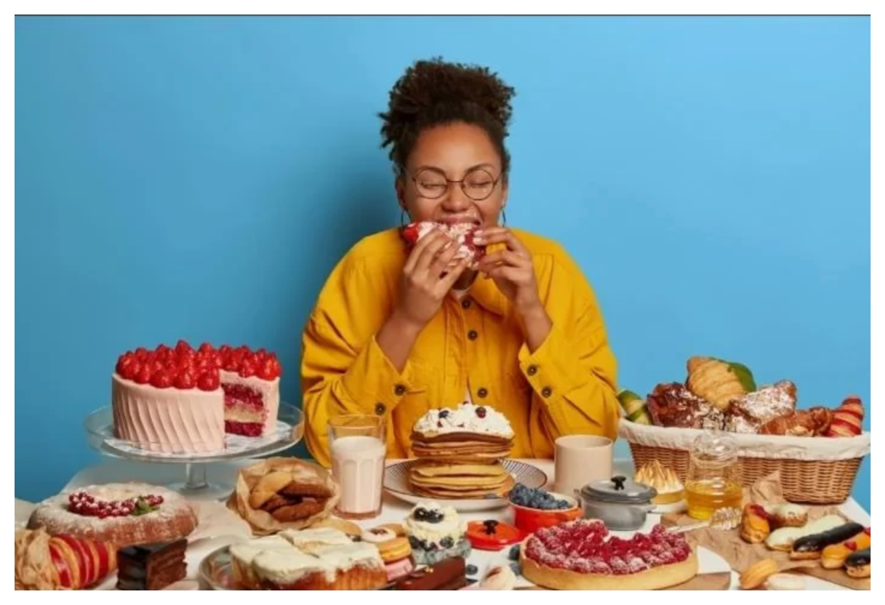
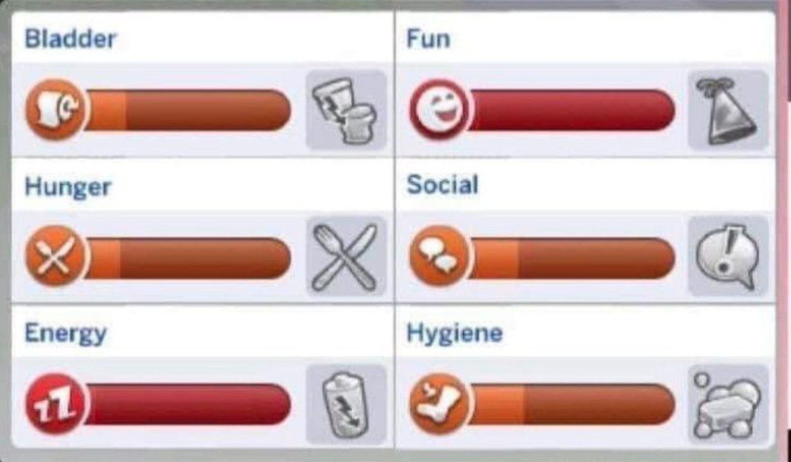
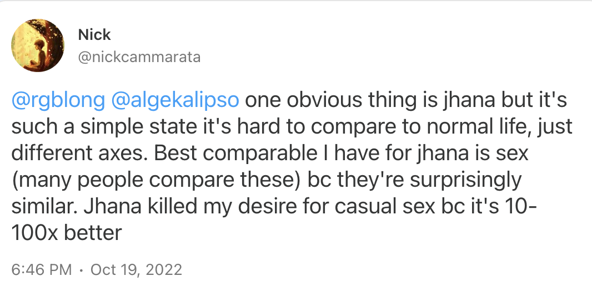
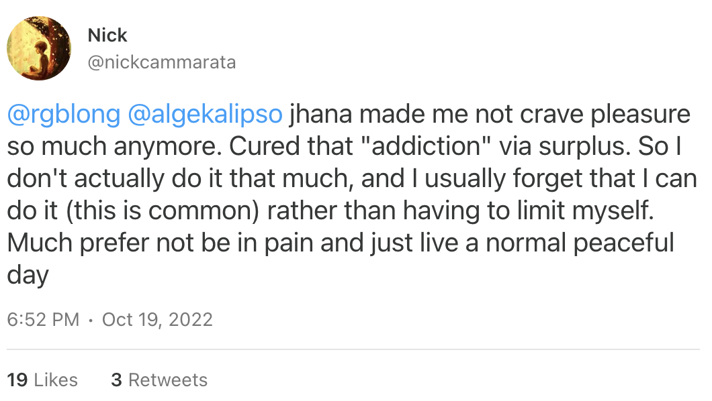
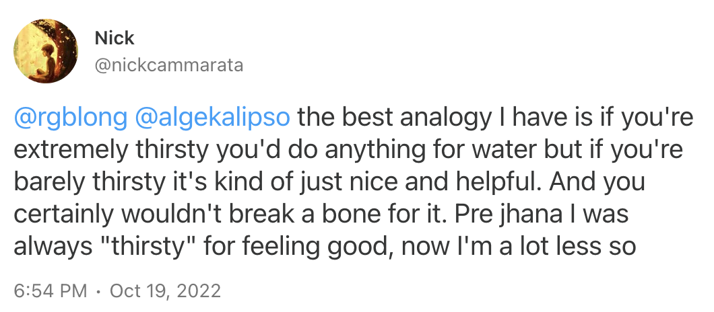
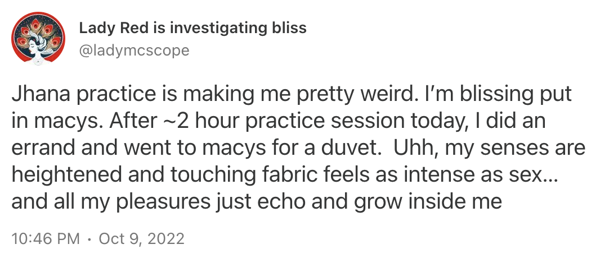
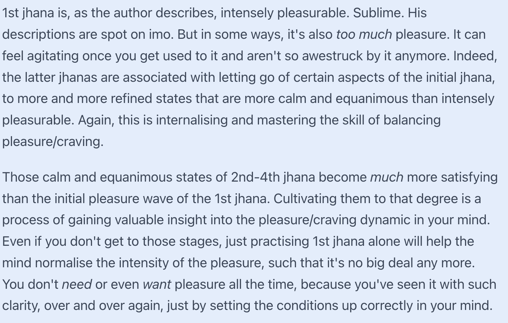

Как быть счастливым – руководство Мэри
Обсуждая мой непрекращающийся пессимизм, друзья сравнивают меня с мысленным экспериментом Мэри в комнате. Только каноничная Мэри никогда не видела цвета, а я никогда не чувствовала счастья.
Что ж, “никогда не чувствовала” это только половина мысленного эксперимента. Вторая половина – что Мэри ученый и полностью разбирается в том, как работает цвет и его восприятие. Так что позвольте мне выдать свое экспертное мнение по поводу счастья.
Начнем с интересного наблюдения – когда люди в депрессии, они предпочитают слушать грустную музыку. Обычно они объясняют это тем, что музыка “успокаивает”, в то время как слушать веселую музыку, когда ты в глубинах скорби, откровенно некомфортно. Сама могу подтвердить – из глубин грусти слышать generic “позитив” чувствуется как издевательство.
Можно подумать, что депрессивным людям грустная музыка эмоционально помогает. Что они чувствуют себя лучше. Но это не так. Когда депрессивные люди слушают депрессивную музыку, они становятся еще депрессивнее. Они погружаются глубже в свое отчаяние. И тем не менее, они продолжают слушать. Что заставляет людей упорно есть этот кактус, почему им кажется, что им от этого лучше, почему они настолько возмущаются, если кактус у них отобрать?
Анорексия
Я обещаю, это релевантно.
В твоей голове есть такой механизм, называется “липостат”, который регулирует запасы жира в твоем организме. Назван он так же, как “термостат”, который регулирует температуру в помещении. Если термостат поставить на температуру 20°-25°, то он будет стараться держать ее именно в этом диапазоне. Если становится холоднее, он включит печку, пока не станет снова тепло. Если станет слишком жарко, включит кондиционер. Чем больше разница между текущей температурой и целевой, тем сильнее он будет жарить/морозить, пока не будет именно такая, какая надо. Липостат делает то же самое, но с запасами жира в организме. У него есть определенная “оптимальная” масса тела, которую он пытается поддерживать. Если ты набираешь слишком много веса – он включает механизмы потери, если слишком много теряешь – включает механизмы набора.
В классическом “Вермонтском тюремном эксперименте” ученые отобрали заключенных со здоровой массой тела и начали их перекармливать гигантскими порциями. Заключенные послушно набрали вес (около 16 кг), хотя их пришлось кормить силой, когда они уже не могли впихнуть в себя очередной кусочек. Как только эксперимент завершился, и им разрешили есть, сколько они хотят, почти все они вернулись к своему здоровому весу в течение 10 недель. Скорость потери веса, о которой мечтали все полноватые женщины, не требовала от них никаких особых усилий или специальных диет – их реальный вес ушел настолько вперед санкционированного липостатом, что организм включил условную печку на максимум и сжег все.
Какие именно механизмы регулирования есть у липостата? Голод – очевидно; когда липостат хочет набора веса, ты голоднее, чем когда хочет потери. Вот репорты о людях с врожденной недовыробаткой лептина (что эквивалентно липостату, который считает тебя слишком худым вне зависимости от веса):
Usually they are of normal birth weight and then they're very, very hungry from the first weeks and months of life. By age one, they have obesity. By age two, they weigh 55-65 pounds, and their obesity only accelerates from there. While a normal child may be about 25% fat, and a typical child with obesity may be 40% fat, leptin-deficient children are up to 60% fat. Farooqi explains that the primary reason leptin-deficient children develop obesity is that they have “an incredible drive to eat”…leptin-deficient children are nearly always hungry, and they almost always want to eat, even shortly after meals. Their appetite is so exaggerated that it's almost impossible to put them on a diet: if their food is restricted, they find some way to eat, including retrieving stale morsels from the trash can and gnawing on fish sticks directly from the freezer. This is the desperation of starvation
Но на чувстве голода все не ограничивается! Липостат может влиять и на эмоции, интересы, эстетические предпочтения…
Unlike normal teenagers, those with leptin deficiency don't have much interest in films, dating, or other teenage pursuits. They want to talk about food, about recipes. “Everything they do, think about, talk about, has to do with food” says [Dr.] Farooqi. This shows that the [leptin system] does much more than simply regulate appetite – it's so deeply rooted in the brain that it has the ability to hijack a broad swath of brain functions, including emotions and cognition.

Страдающие от анорексии – липостата, выставленного настолько низко, что это несовместимо с жизнью – очень много ерзают. Они постоянно дергаются, дрожат, крутят что-то в руках, ходят кругами, не могут спокойно сидеть на месте. Их организм пытается таким образом сжечь как можно больше калорий – патологически выкрученный липостат не теряет ни одной возможности потерять лишний миллиграмм. Если они много едят, он вызывает тошноту, заставляет вырвать лишнюю еду. Когда они смотрят в зеркало, он модифицирует ожидания сенсорного восприятия и заставляет их видеть себя толще, чем они есть, чтобы создать лишнюю мотивацию худеть. Порой у анорексиков могут быть панические атаки при виде еды – липостат прямо очень сильно хочет, чтобы они не ели, и он готов ради этого подчинить себе все системы организма.
В случае ожирения, когда липостат выставлен выше нужного и пытается набрать вес, у него тоже есть на уме больше трюков, чем просто голод. Человек становится ленивее, сонливее, неподвижнее – чтобы экономить калории. Все системы его организма, от иммунитета до эрекции, начинают работать на минимальном энергоснабжении, организм в целом слабеет. Кулинарные вкусы меняются, хочется больше плотной еды с большим количеством калорий на килограмм, яблоки не кажутся такими же вкусными, как бургеры. Картофельная диета работает от предположения, что она “чинит” завышенный липостат и переводит организм в режим сжигания калорий – и те, для кого она срабатывает, отчитываются о гигантском приливе энергии и мотивации, который прекращается, когда вес приходит в норму – потому что липостат хочет, чтобы ты делал больше и думал сильнее и сжигал тем самым больше калорий.
Липостат – это причина, почему “калории на входе, калории на выходе, просто меньше ешь и больше двигайся” не работает как стратегия потери веса. Это технически верно, конечно, против термодинамики не попрешь – но если твой липостат с таким планом не согласен, то он сделает все возможное, чтобы он не сработал. Даже если у тебя титаническая сила воли, ты не сможешь перебить такие трюки, как “отключить к чертям иммунную систему”. Диеты, которые работают, работают именно потому что могут “сбить” твой липостат, установить его на значение пониже. А если липостат в том месте, в котором тебе надо, то никаких усилий от тебя не требуется – ты можешь есть что хочешь и когда хочешь, а серый кардинал за троном обеспечит, что ты будешь хотеть именно то, что тебе более всего полезно.
Липостат это пример “системы управления” в кибернетическом смысле. Весь организм состоит из таких, переплетенных, регулирующих друг друга. Сам липостат тоже подконтролен другим системам управления, и они могут выставить его в нужное им значение, чтобы поддерживать интересующую их переменную на оптимальном значении. Добро пожаловать в человеческий организм.
Из всех систем управления, липостат изучен лучше всего – мы точно понимаем, из чего он сделан, через какой гормон определяет содержание жира, и на что может влиять. Другие системы управления менее очевидны и сложнее локализуются. Но есть гипотеза, что счастье тоже работает как система управления.
Фаталистический гедонизм
Гипотеза эта не полностью общепринятая, но достаточно доверительная, что я буду ее придерживаться. Источники по этой теме не могут особо договориться между собой, и самое близкое, что я могу найти к общему термину для этой системы это т. н. “happiness set point”. Что не совсем хорошо отражает идею системы управления, так что в этой статье я буду называть ее “мудостат” (от англ. mood – настроение).
Твой уровень настроения в моменте регулирует то, насколько предсказуемым и эксплуатируемым является окружение с точки зрения твоего мозга, и тем самым взвешивает точность1 сенсорных данных. Организм работает оптимальнее всего, когда настроение соответствует окружению – слишком счастливый человек будет чрезмерно безрассудным и рисковым, слишком несчастный – пассивным и неуверенным. Ну, или, во всяком случае, так оно было в саванне, где наш мозг эволюционировал, и где основным назначением этой системы было решать, догонять нужно очередную зверушку или наоборот, убегать от нее. Современный мир в смысле “предсказуемости сенсорных данных” настолько не похож на тот, что был в прошлом, что связь здесь осталась в лучшем случае косвенная. Поэтому я пока не буду особо останавливаться на этом чисто техническом аспекте и перейду сразу к выводам.
Важно знать, что мудостат регулирует наш уровень счастья с таким же рвением, как липостат регулирует вес, и он также делает что угодно, чтобы мы были настолько счастливы, насколько по мнению мудостата мы должны быть. Депрессия это “психологическая анорексия” – мудостат очень сильно уверен, что ты должен быть несчастен, и он будет делать тебя несчастным. Депрессивные люди слушают депрессивную музыку именно поэтому – мудостат хочет, чтобы ты был несчастен, и он делает так, что тебя тянет к источникам несчастья. Когда депрессивный человек чувствует раздражение по поводу веселой музыки, это того же рода процесс, по которому анорексика начинает тошнить от еды – оно могло бы сделать тебя счастливее, но организм отказывается это воспринимать, потому что не считает, что ты должен быть счастлив. Именно поэтому же люди в депрессии отказываются заниматься интересными вещами, выходить из дома, общаться с людьми (все, что могло бы улучшить настроение), и вместо этого предпочитают крутить в голове темные мысли, убеждать себя, как все плохо, резать руки, и сидеть в темной комнате (все, лишь бы ухудшить настроение).
И пытаться починить депрессию, делая веселые вещи, точно так же не работает, как лечить анорексию, принимая пищу. Мудостат найдет способ все испортить. Он будет работать на всех уровнях организма, от мимолетных мыслей до долгосрочных стратегий, лишь бы саботировать все попытки стать счастливее и привести все планы к поражению. Вы знали, например, что люди в депрессии буквально видят мир более серым и тусклым, измеримо на уровне воткнутых в зрительную кору электродов? Неспроста.
(Обратное состояние феноменально высоко поставленного мудостата – мания – нас интересует меньше и я в ней разбираюсь хуже, так что опустим)
Эта довольно фаталистическая идея известна как гедонистическая беговая дорожка. Ты можешь выиграть в лотерею и стать миллионером, ты можешь попасть под поезд и стать инвалидом – твой долгосрочный уровень счастья может особо и не измениться. Если в одном месте счастья прибыло, мудостат обеспечит, чтобы в другом убыло.
Что делать?
Для начала очевидные вещи, до которых вы и без этого поста догадаетесь, но для полноты картины не упомянуть их я не могу.
Первый момент – в Освенциме толстых не было. Насколько бы липостат ни делал заявку на набор веса, он не сможет это сделать, если нет еды – аналогично мудостат не сможет перебить ситуацию, когда вы не можете удовлетворить свои базовые потребности. Если ты умираешь от жажды, двое суток не спал, и у тебя зверски болит зуб – лучшее, что ты можешь сделать для счастья, это исправить это.

Второй момент – если у тебя клиническая депрессия, то от нее надо лечиться, буквально ничего не сделает тебя счастливее долгосрочно, пока ты это не сделаешь – мудостат не обманешь. Напрямую разрабатывать мудостат, определять ситуации, когда психика заставляет тебя искать негатив, и сознательно заменять на позитив, даже если это чувствуется неправильно – работает и называется “когнитивно-поведенческая терапия”. Применяется и против анорексии, кстати. Многие другие расстройства могут вызвать депрессию как побочный эффект – гендерная дисфория и ОКР в моем случае; ПТСР классически – и ничто не поможет тебе быть счастливее сильнее, чем лечить их.
Перейдем к неочевидным.
То, что ты хочешь и то, что делает тебя счастливее, могут быть не связаны, или даже противоположны, как в вышеупомянутом примере с депрессивной музыкой. С точки зрения нейрологии, система, отвечающая за счастье/удовольствие и система, отвечающая за желание/побуждение – две разные и лишь поверхностно связанные системы. Поэтому первая интуиция – что ты будешь счастливее, если будешь делать то, что хочешь и что тебе нравится – неверна. В первом приближении ты хочешь то, что ведет тебя к уровню счастья, который требует мудостат, и это не всегда хорошо. Во втором – даже твой мудостат может совершенно неправильно знать, что сделает тебя счастливее, а что нет, потому что современный мир очень далек от первобытной саванны, где можно было построить прямое соответствие “счастье == предсказуемость сенсорных данных”.
Тем не менее, чтобы стать счастливее, надо повышать точку мудостата. Без этого любые удовольствия или хобби будут казаться “пустыми” – твоя психика будет компенсировать любую радость соответствующей грустью, и тебе на самом деле лучше не станет. А с этим – организм сам разберется.
Мудостат пытается отслеживать, насколько предсказуемым и эксплуатируемым является окружение (по сложным техническим причинам, это один и тот же параметр). Чтобы организм счел, что он выставлен слишком низко, и скорректировал его выше, его нужно приятно удивлять. Система вознаграждения в мозге отслеживает разницу между предсказанным и реальным вознаграждением, где “предсказанное” это именно то, под что подстраивается мудостат. Чтобы держать его на высоком уровне, надо, чтобы каждый раз, как поступает награда, она была выше ожидаемого.
Это очень парадоксальная, можно сказать, анти-индуктивная задача. Ты не можешь сознательно выбрать действие, которое даст тебе больше награды, чем ты ожидаешь – потому что ты это ожидаешь! Это как обмануть самого себя.
Но выход есть. Этот парадокс – именно тот механизм, которым обеспечивается человеческое любопытство и тяга к новизне. Единственный способ дать себе больше награды, чем ты ожидаешь – идти в неизведанное. Изучать неизвестное. Знакомиться с новыми людьми. Каждый раз, как твой кругозор расширяется, каждый раз, как ты получаешь награду, которую раньше не мог представить и концептуализировать – твой мудостат растет вверх, твоя психика понимает, что на самом деле мир более эксплуатируемый, чем она считает.
(будет ли мудостат падать обратно, если ты после этого решишь “довольно, мне и сейчас хорошо, сяду обратно на диван” – я, честно, не уверена, тут информация противоречива)
Иногда мозг требует знакомого. Иногда мозг просит пересмотреть любимый ситком в пятнадцатый раз. Я рекомендую это делать пореже. Если задача стоит “отдохнуть”/”расслабить мозги” – то это плохой способ. Это плотный поток сенсорной информации, который твоя психика будет учитывать, настраивая мудостат. В моменте ты отдохнешь, но в долгосрочной перспективе это опустит твой уровень счастья. Для отдыха мозга ищи менее информационно перегруженные развлечения, вроде прогулки по парку. Если же ты в полном расцвете сил, не устал, не перегрузился, но тебе все равно хочется потратить день именно на это – то это явный сигнал, что мудостат считает тебя слишком счастливым. Вложи толику силы воли и займись чем-то другим.
Что делать, если мудостат сам не знает, чего хочет?
Раньше я сказала, что современный мир очень далек от мира, в котором мы эволюционировали, и потому мудостат порой просто неправильно знает, насколько эксплуатируем мир и что может сделать тебя счастливее. Разберем этот момент подробнее.
Я прочитала только один отрывок из книги The Moral Animal – где объясняется, почему подростки так часто ведут себя как бунтари – но он послужит хорошим примером несоответствия между спеками современного мира и спеками первобытной саванны. Мы социальные животные, и наш “социальный статус”, в широком смысле этого слова, отслеживается нашим мозгом на очень фундаментальном уровне. Десять лет школы, где ты вынужден жить по расписанию, слушать и выполнять приказы взрослых, и получать от них постоянную оценку своей деятельности, регистрируется как “я в самом днище иерархии, прислуживаю у параши”. Никакая популярность у других детей это не скомпенсирует – на очень глубинном психологическом уровне организм понимает, что ему нечего терять и нужно срочно пытаться перехватить власть. Даже если на самом деле в этом нет смысла и это ничему не поможет.
Индустриальная революция и ее последствия стали бедствием для человеческой расы. Не в последнюю очередь потому что социальная структура общества ушла далеко от человеческой природы. Наши мозги заточены под жизнь в тесной группе размером до числа Дунбара, где все знают всех, нет осмысленного разделения труда, и детей растят всем племенем. Сейчас же мы растем в нуклеарной семье, не знаем своих соседей, общаемся в чатах чаще, чем в реальной жизни, и вступаем в парасоциальные отношения со звездами соцсетей. В каком-то смысле перед нами открылось много возможностей. Но наша психика паникует. Наш мудостат не понимает, что происходит, и регистрирует крайне неэксплуатируемое состояние социальной структуры вокруг нас. И делает нас менее счастливыми, даже если мы не можем понять, из-за чего.
Решение? Анприм. Трогать траву. Заводить больше личных отношений с мясными друзьями в физическом мире. Найти себе уютное сообщество друзяшек. Чаще с ними видеться. Зрительный контакт. Обниматься. Влюбиться и трахаться. Одиночество убьет твою способность быть счастливым, как ничто другое. Патологически онлайновые инцелы патологически несчастливы. Религиозные люди чаще счастливы, не (только?) потому что Бог наполнил их благодатью, а потому что у них чаще есть стабильное сообщество близких к ним по мировоззрению людей. Экстраверсия сама по себе очень сильно коррелирует со счастьем, развивай ее, если можешь.
Что делать, если я хакер и хочу читерить?
Что ж, хакерские подходы здесь есть. Use at your own risk/not medical advice.
Психоделики
Психоделики, и в особенности псилоцибин (“грибы”), делают с мозгом много чего необычного, но если говорить очень грубо, они расслабляют априорные сенсорные ожидания, и в частности могут “расшатать” их, если они застряли на каком-то патологическом уровне. Когда люди говорят, что опыт употребления грибов радикально изменил им жизнь к лучшему – на нейронном уровне это значит, что их мудостат резко рванул вверх, и их мозг начал работать на износ, ища способы сделать себя счастливее. Разные люди будут ожидать поиска счастья в разных местах, поэтому конкретная природа “просветления/осознания” будет у всех разная. Но точно как липостат может перехватить управление всем организмом в поисках способов сделать тебя толще, так и мудостат абсолютно может просто взять и сделать тебя better person во всех смыслах. Работает не всегда и нафакапить легко, но когда работает – оно работает.
Дхъяна
К нейробиологической модели “счастье это предсказуемость сенсорных данных” есть стандартное возражение, “dark room problem” – почему мы тогда не более всего счастливы, когда сидим в темной комнате в тишине и не двигаемся? Тогда окружение очень предсказуемо!
Ответ в том, что “сенсорные данные” здесь значат не только пять классических органов чувств, но какое угодно субъективное ощущение, которое поднимается до уровня сознания. Это включает в себя любые мысли, побуждения или воображение, которые не останавливаются и зачастую очень даже против того, чтобы вы сидели в темной комнате и не двигались. Вечная темнота и тишина это очень большое несовпадение с тем, что ожидает ваше сознание!
Осознанная медитация построена на сознательном отслеживании и гашении собственных мыслей и ощущений, что в итоге делает их более предсказуемыми. И, да, опытные медитаторы, в целом, счастливее.
Но при достаточной практике удается погасить выбивающиеся из ожиданий квалиа полностью. И тогда да, сидеть в темной комнате и не двигаться это самое блаженное состояние, которое может быть. Это называется “дхъяна”, и вот что говорят люди, которые научились в нее входить:





Практика дхъяны сделает так, что ваше счастье будет меньше завязано на “удовольствие” и в целом будет намного более достижимо. Решайте сами, насколько вам это надо.
Резюмируя
- Удовлетворять базовые физиологические потребности
- Лечить психические заболевания
- Познавать новое и искать новизну
- Трогать траву
- Есть грибы
- Принять буддизм
precision, не accuracy